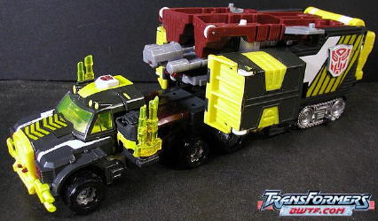
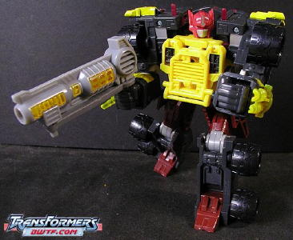
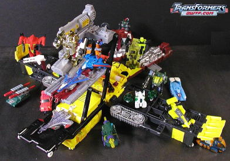
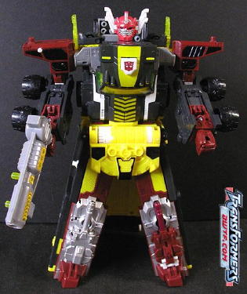
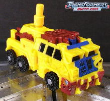
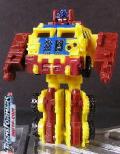
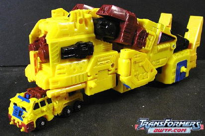
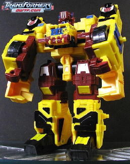

Corona
Sparkplug
Corona
Sparkplug
Set Price : $30 U.S.
(NOTE: Because these sets are repaints,
these are not full-blown reviews. They mainly cover any changes made to
the mold and the color scheme, and merely compares them to their original
molds. For a review of Armada Optimus Prime w/ Sparkplug-- the predecessor
to the toys in this set of the same name-- click
here
.
For a review of Armada Overload w/ Rollout-- the predecessor to the toys
in this set of the same name-- click
here
.)
Corona
Sparkplug
Allegiance
: Minicon
Size
: Mini-Con
Difficulty of Transformation
: Easy
Color Scheme
: Chrome gold, maroon,
and some black and silver
Rating
: 7.1
Corona Sparkplug here
is the same as his
Armada gold chrome version
,
so no differences here. You think they'd at least make the Minicon a LITTLE
different...
 Optimus
Prime
Optimus
Prime


Allegiance
: Autobot
Size
: Super
Difficulty of Transformation
: Hard
Color Scheme
: Bright yellow, black,
light gray, maroon, and some light red, transparent bright yellow, and
white
Powerlinx ports
: 13 (2 gimmicked)
Rating
: 7.5


This version of Prime
is very... um... yellow. Still, it's certainly an above-average effort
for a discount store exclusive, when compared to some of the other recent
ones... For one thing, a few of the paint apps are different, such as the
now striped patterns on the front hood of the car and the black-and-yellow
stripes near the back of the trailer. The other paint apps are the same
as they were on Powerlinx Armada Prime, albeit in different colors. The
only main plastic color that is kept the same from Powerlinx Prime are
the light gray parts, and such a major color change is certainly appreciated
for a discount set. The black, red, white, gray, and silver all go together
very nicely, and give Prime a bit of a darker feel to him. However, what
DOESN'T go together with the other colors is-- you guessed it-- that ugly,
noxious yellow. Egads, it's like the design team had all the other colors
worked out perfectly, but then it was lunch time so they just slapped any
old color on the remaining pieces. It's an ugly color that shouldn't be
used on any Transformer, much less one that's supposed to be going for
a darker feel. Even that transparent yellow plastic looks awfully gaudy...
ick. What were they thinking?
No mold changes have
been made to CostCo Prime.
Rollout


Allegiance
: Minicon
Size
: Mini-Con
Difficulty of Transformation
: Very
Easy
Color Scheme
: Yellow, maroon, and
some black and glossy blue
Rating
: 3.9
Rollout, just like Optimus
Prime here, is now really really yellow. At least it's not quite as noxious
of a color that was on Prime, but I can still think of about a hundred
other colors that would have worked better. Still, the blue, black, and
maroon go reasonably well with the yellow, and Rollout seems to have roughly
the same amount of paint apps as his previous versions. So it's not too
bad, especially given that the set's got such a huge discount.
No mold changes have
been made to CostCo Rollout.
 Overload
Overload


Allegiance
: Autobot
Size
: Mega
Difficulty of Transformation
: Medium
Color Scheme
: Yellow, maroon, black,
and some glossy blue and silver
Powerlinx ports
: 6 (0 gimmicked)
Rating
: 8.9
CostCo Overload-- or,
as I like to call him, Magic School Bus Overload-- has pretty much the
same color scheme as CostCo Rollout, so my comments on Rollout's scheme
apply here as well. There are some large areas of Overload's vehicle mode,
however, that don't have any paint apps at all, and having that much yellow
without any other colors interrupting it... ain't too easy on the eyes,
in my opinion. And unlike Prime, he doesn't have any "new" paint apps,
just the same ones as Armada Overload, but different colors. All the different
colors really come together in robot mode, though, helping to break up
all that yellow. It's still, I think, the worst of the color schemes that
this mold has had, but I wouldn't call it downright horrible-- just very
mediocre.
No mold changes have
been made to CostCo Overload, so he can combine with his packmate Prime
and all that, just like the Armada version could.
The CostCo repaints of Prime and Overload are definitely a bit gaudy and bright, and are, I think, the worst color schemes these toys have gotten so far, even if their color schemes have been changed completely, which is a little uncommon these days for discount exclusive toy sets. And having a few new paint apps on Prime ain't too bad, either. But still, if you've noticed, you may be asking yourself why I've given these gaudy repaints higher ratings than any of their previous versions. The answer, my friends, is in the price! You pay only $30 for $60 worth of toys-- it's a GREAT deal. So I'd mildly recommend the set if you don't have Armada Prime and Overload, but wanted to get them-- but if you already have any previous versions of these molds, you might just wanna stick with the ones you've got.
No Stats
Review by Beastbot